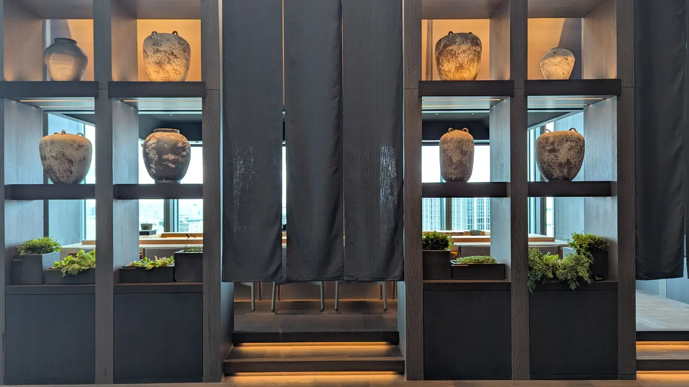

Bring visible sustainability into everyday spaces.
For restaurants, hotels, sponsors, and organizations seeking custom urban farming projects. Office and residential installations are organized under Green Spaces.

Explore options
Looking for an office or residential installation?
Office, coworking, and residential-building installations live under Green Spaces. Start there for space-specific options, then return to Partnerships if you want a larger collaboration, workshop series, sponsorship, or custom project.
Overview
Greentopia works with restaurants, hotels, corporate offices, property developers, and sponsors on custom urban farming projects. These are longer-term relationships — not one-off installations. We design systems that fit your space, maintain them over time, and pair them with programming that brings value to your customers, guests, or employees. Every partnership starts with a conversation about what you are trying to achieve.
Partnership models
We are flexible on how partnerships are structured. Common models include installation plus an ongoing maintenance contract; installation with regular programming such as workshops, harvest events, and team activities; consulting engagements for organizations planning urban farming initiatives; and sponsorship arrangements where organizations support school and community programs in exchange for visibility and impact reporting.
Consulting focus
We consult on hydroponic system design, urban farming strategy, food education program development, and sustainability planning. If you are exploring urban agriculture for your organization and need expert guidance before committing to hardware, we can help you think through the options — from system selection to space planning to ROI modeling.
Example projects
We have partnered with international schools, coworking spaces, hotels, restaurants, and community organizations across Tokyo. Contact us to learn more about relevant examples.